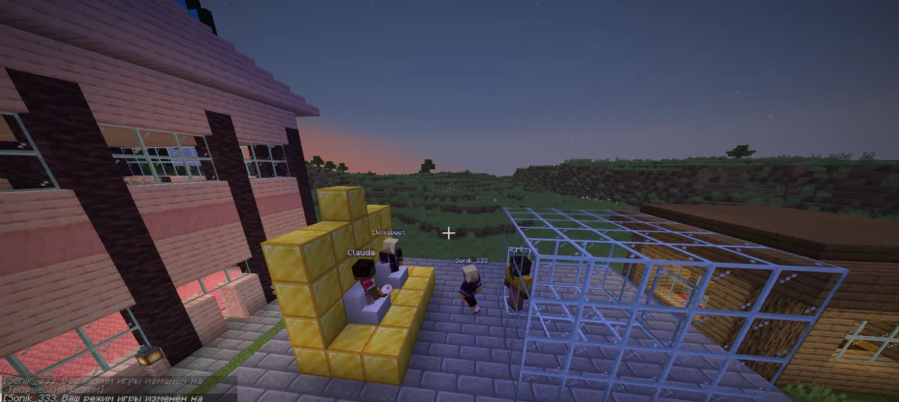
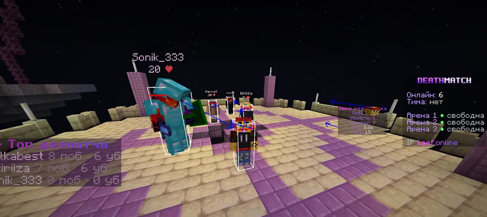
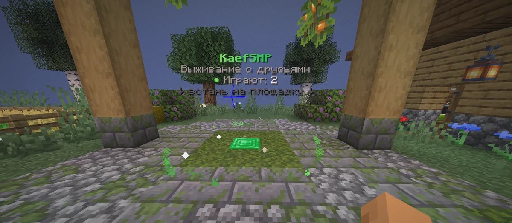

KaefSMP
Открыт всегдаВыживание с друзьями
- Свежая версия 26.2 и сложность hard
- Голосовой чат — слышишь тех, кто рядом
- Свои территории, валюта «ворки» и музыка с YouTube
KaefOnline — сеть Minecraft-серверов для своих: спокойное выживание с друзьями, честные дуэли и королевские битвы на ивентах. Заходишь в хаб и выбираешь, во что играть сегодня.
Java Edition 1.13 – 26.3 · бесплатно · без лаунчеров и модов
Каждый режим — свой сервер со своими правилами и атмосферой. Переходить между ними можно в любой момент, прогресс не теряется.

Выживание с друзьями

Дуэли и рейтинг


После входа ты попадаешь в хаб. Встань на площадку режима или открой компас — там видно, сколько людей сейчас в каждом мире и какие открыты.
/server smp/server duel/report ник причина
Minecraft Java Edition любой версии от 1.13 до 26.3.
Адрес — . Порт указывать не нужно.
При первом входе: /register пароль пароль. Дальше — /login пароль.
Встань на площадку в хабе или нажми компас в хотбаре.
Анти-бот проверяет каждого новичка пару секунд при первом входе. Аккаунт защищён паролем.
На SMP работает Simple Voice Chat: поставь мод — и общайся с теми, кто рядом в игре.
/duel ник на SMP — бой на арене KaefDuel, а потом обратно на то же место.
/report ник причина с любого сервера — администрация видит сразу.
Рейтинг лучших дуэлянтов сети по китам — с рангами, очками и профилем каждого игрока.
Да. Играть можно бесплатно на всех режимах.
Minecraft Java Edition от 1.13 до 26.3 — сервер сам подстроится под твою версию. Bedrock (телефоны и консоли) пока не поддерживается.
Нет. Вход защищён паролем: при первом входе придумай его через /register.
Сеть пока включается по расписанию. Время запуска и анонсы ивентов публикуем в Telegram. Если сервер включён, а зайти не выходит — проверь версию и адрес kaef.online.
KaefBR открывается только на ивенты. Дату и время смотри в канале @brvorhp.